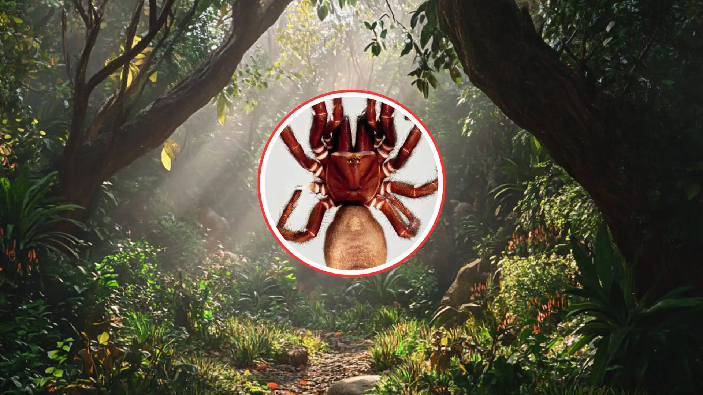

Hallazgo de la araña de embudo mortal más grande de Australia: se llama “Chico grande”.
Hallazgo de la araña de embudo mortal más grande de Australia: se llama “Chico grande”.
Los hijos de Apolo en la Luna: los 12 hombres que conquistaron nuestro satélite e hicieron historia
Juan Ignacio Cirac: “Ya sabemos cómo hacer un ordenador cuántico, pero construirlo es complicado”
La Luna como satélite de leyendas: un símbolo común de culturas y civilizaciones, desde la mitología hasta la ciencia
Más allá de Normandía: estas fueron las otras batallas decisivas de la ofensiva aliada durante la Segunda Guerra Mundial
Sony no baja el pie del acelerador y vuelve a hundir el precio de la PS5 Slim Digital este inicio de año
Transforma tu descanso: Claves para un sueño reparador
La tranquilidad de tener un seguro de salud que se adapta a ti.
Astrónomos descubren las "perlas cósmicas": un sistema galáctico casi imposible que rompe las reglas del universo